12 AED de univariadas
12.1 Qual a distribuição dos valores numéricos?
Onde os dados estão centrados? Como eles estão espalhados? Eles são simétricos, i.e., a distribuição é normal? São enviesados, bi-modais? Existem valores extremos?
Já vimos algumas operações matemáticas com vetores e também como usar as funções hist() e boxplot() para gerar figuras de distribuição de variáveis numéricas individualmente.
Vimos também como fazer iterações usando funções da família apply().
Também já aprendemos sobre a função summary(), que faz um resumo de todas as variáveis nos seus dados e aqui vamos entender isso melhor, apresentando a função quantile(), que permite extrair os quantis, que são valores que dividem uma distribuição probabilística em intervalos iguais de probabilidade.
Com essas ferramentas, podemos descrever a distribuição de nossas variáveis numéricas.
12.1.1 Dados do tutorial
Vamos importar novamente os conjuntos de dados de avistamento de aves do cerrado (utilizado no capítulo 11) e de parcelas em caixetais (utilizado no capítulo 7):
## Lendo a planilha com read.table
avesc <- read.table("aves_cerrado.csv", row.names = 1, header = T, sep = ";", dec = ",", as.is = T, na.strings = c("NA", "", "NULL"))caixeta <- read.csv("caixeta.csv") ## arquivo caixeta.csv deve estar no diretorio de trabalho
# note que mantemos todos os argumentos padrão (veja o formato do arquivo caixeta)## Resumo estatistico: medias, media truncada e mediana, quantis
# pegando apenas as variáveis numéricas
head(avesc[, 2:4])| urubu | carcara | seriema | |
|---|---|---|---|
| Ce1 | 5 | 18 | 6 |
| Ce2 | 7 | 7 | 6 |
| Ce3 | 5 | 14 | 4 |
| Ce4 | 3 | 12 | 5 |
| Ce5 | 4 | 16 | 4 |
| Ce6 | NA | 20 | NA |
# podemos fazer um resumo estatístico da distribuição de cada uma dessas colunas
summary(avesc[, 2:4])| urubu | carcara | seriema | |
|---|---|---|---|
| Min. : 2.00 | Min. : 3.00 | Min. : 2.000 | |
| 1st Qu.: 7.00 | 1st Qu.: 5.50 | 1st Qu.: 4.000 | |
| Median :12.00 | Median : 9.00 | Median : 5.000 | |
| Mean :11.93 | Mean :10.25 | Mean : 5.345 | |
| 3rd Qu.:16.50 | 3rd Qu.:14.00 | 3rd Qu.: 6.000 | |
| Max. :22.00 | Max. :24.00 | Max. :12.000 | |
| NA’s :1 | NA’s :1 | NA’s :2 |
# essa função me retorna várias estatísticas da distribuição de cada variável
# os valores mínimos e máximos
# a tendência central pela média e pela mediana
# e o 1 e o 3 quartil, que juntamente com o mínimo, o máximo e mediana,
# indicam as divisões dos dados em quatro partes identicas (vamos ver isso melhor abaixo)
# funcao summary, mas não retorna por, exemplo, o desvio padrão ou a variância das colunas.# e não podemos fazer isso apenas com a função sd para todas as colunas
sd(avesc[, 2:4]) # ops deprecado (eu estou trabalhando com uma matriz)# mas posso usar a funcao apply (para cada coluna, argumento MARGIN)
apply(avesc[, 2:4], 2, sd, na.rm = TRUE)## urubu carcara seriema
## 5.429372 5.383862 2.013566# summary já retorna isso, mas eu poderia usar para qualquer funcao
apply(avesc[, 2:4], 2, median, na.rm = TRUE)## urubu carcara seriema
## 12 9 5## urubu carcara seriema
## 11.932203 10.254237 5.344828## urubu carcara seriema
## 2 3 2## urubu carcara seriema
## 22 24 12| urubu | carcara | seriema | |
|---|---|---|---|
| 0% | 2.0 | 3.0 | 2 |
| 25% | 7.0 | 5.5 | 4 |
| 50% | 12.0 | 9.0 | 5 |
| 75% | 16.5 | 14.0 | 6 |
| 100% | 22.0 | 24.0 | 12 |
## 0% 25% 50% 75% 100%
## 2.0 7.0 12.0 16.5 22.0# aparecem também quando usamos summary, que no entanto, retorna a média artimética,
# que é o único valor que não é um quartil.
summary(avesc$urubu)| Min. | 1st Qu. | Median | Mean | 3rd Qu. | Max. | NA’s |
|---|---|---|---|---|---|---|
| 2 | 7 | 12 | 11.9322 | 16.5 | 22 | 1 |
# para entender melhor isso vamos graficar:
# primeiro num histograma
hist(avesc$urubu, main = "Avistamentos de Urubu", xlab = "Número de aves observadas por local")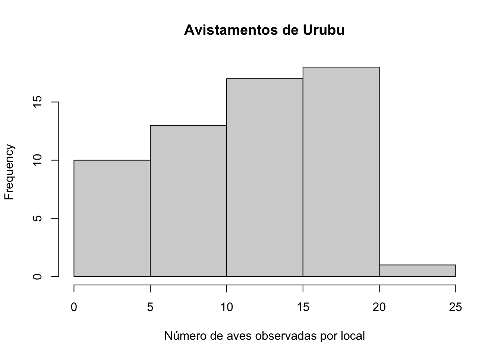
# melhorando um pouco
hist(avesc$urubu, main = "Avistamentos de Urubu", xlab = "Número de aves observadas por local", breaks = 22, col = "gray")
# agora adicionamos em azul os quartis
abline(v = quantile(avesc$urubu, na.rm = TRUE), col = "blue", lwd = 5)
# note que as barras azuis estão igualmente espaçadas no eixo X, pois elas dividem a distribuição em partes iguais
# vamos plotar a média
abline(v = mean(avesc$urubu, na.rm = TRUE), col = "red", lty = "dotted", lwd = 6)
# e a mediana
abline(v = median(avesc$urubu, na.rm = TRUE), col = "green", lty = "dotted", lwd = 6)
# note como a mediana é equivalente ao quartil que indica 50% na divisão simétrica dos dados e que neste caso a diferença entre média e mediana é muito pequena, pois os dados são bem simétricos em relação à tendência central
# vamos adicionar o desvio padrão:
v1 <- sd(avesc$urubu, na.rm = TRUE) + mean(avesc$urubu, na.rm = TRUE)
v2 <- mean(avesc$urubu, na.rm = TRUE) - sd(avesc$urubu, na.rm = TRUE)
abline(v = c(v1, v2), col = "yellow", lty = "solid", lwd = 4)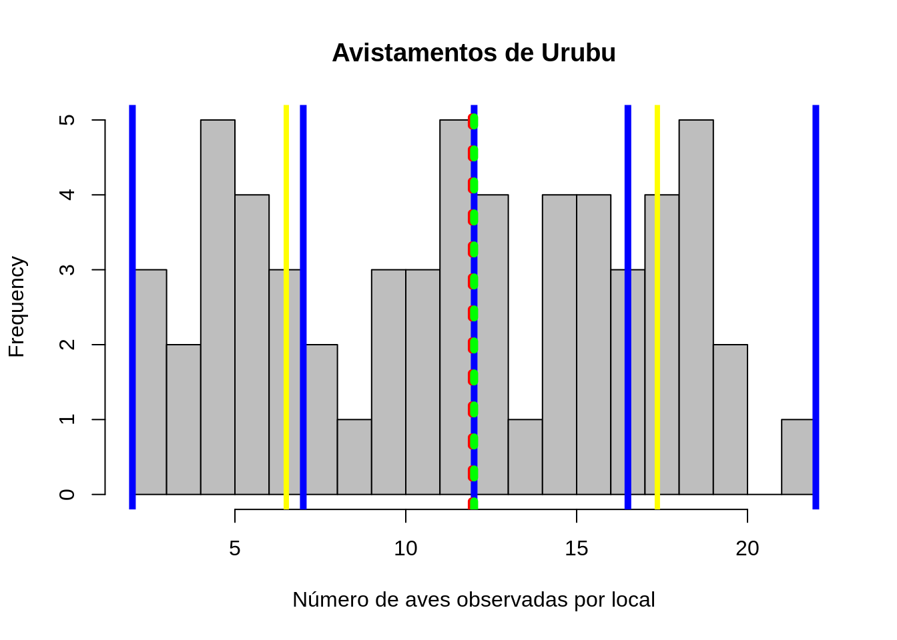
# agora com um box plot:
boxplot(avesc$urubu)
abline(h = quantile(avesc$urubu, na.rm = TRUE), col = "blue", lwd = 2)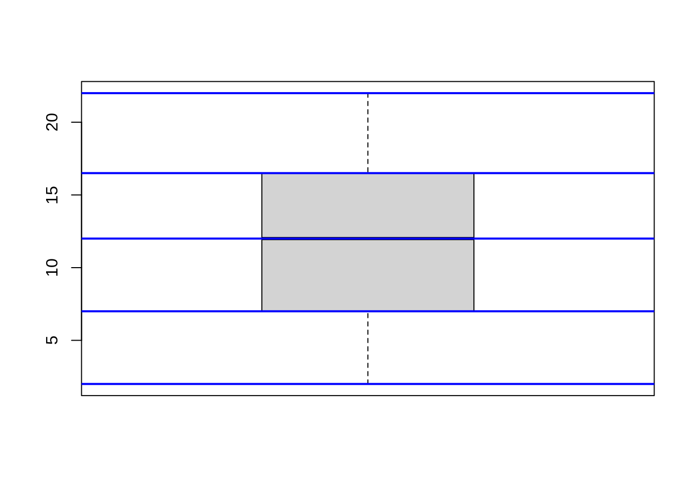
# Média truncada = e.g. TIRANDO 10% DOS VALORES NOS EXTREMOS (posso ver como muda, caso tenha valores extremos, vai mudar muito)
?mean # veja o argumento trim## urubu carcara seriema
## 12.000000 9.897959 5.145833## urubu carcara seriema
## 11.932203 10.254237 5.344828# valores de quantils em outras probabilidades
quantile(avesc$urubu, probs = seq(from = 0, to = 1, by = 0.1), na.rm = TRUE) # a cada 10%## 0% 10% 20% 30% 40% 50% 60% 70% 80% 90% 100%
## 2.0 5.0 6.0 8.0 11.0 12.0 13.8 16.0 17.4 19.0 22.0## [1] 1027 7## [1] "local" "parcela" "arvore" "fuste" "cap" "h" "especie"| local | parcela | arvore | fuste | cap | h | especie |
|---|---|---|---|---|---|---|
| chauas | 1 | 1 | 1 | 210 | 80 | Myrcia sulfiflora |
| chauas | 1 | 3 | 1 | 170 | 80 | Myrcia sulfiflora |
| chauas | 1 | 4 | 1 | 720 | 70 | Syagrus romanzoffianus |
| chauas | 1 | 5 | 1 | 200 | 80 | Tabebuia cassinoides |
| chauas | 1 | 6 | 1 | 750 | 170 | indet.1 |
| chauas | 1 | 7 | 1 | 320 | 80 | Myrcia sulfiflora |
## 'data.frame': 1027 obs. of 7 variables:
## $ local : chr "chauas" "chauas" "chauas" "chauas" ...
## $ parcela: int 1 1 1 1 1 1 1 1 1 1 ...
## $ arvore : int 1 3 4 5 6 7 8 9 10 10 ...
## $ fuste : int 1 1 1 1 1 1 1 1 1 2 ...
## $ cap : int 210 170 720 200 750 320 480 240 290 310 ...
## $ h : int 80 80 70 80 170 80 160 140 120 120 ...
## $ especie: chr "Myrcia sulfiflora" "Myrcia sulfiflora" "Syagrus romanzoffianus" "Tabebuia cassinoides" ...# vamos calcular o DAP a partid o CAP (circunferencia a altura do peito)
# se cap = 2*pi*dap/2 portanto dap = cap/pi
dap <- caixeta$cap / pi
hist(dap) # veja distribuição diametrica desses dados (é uma típica log-normal)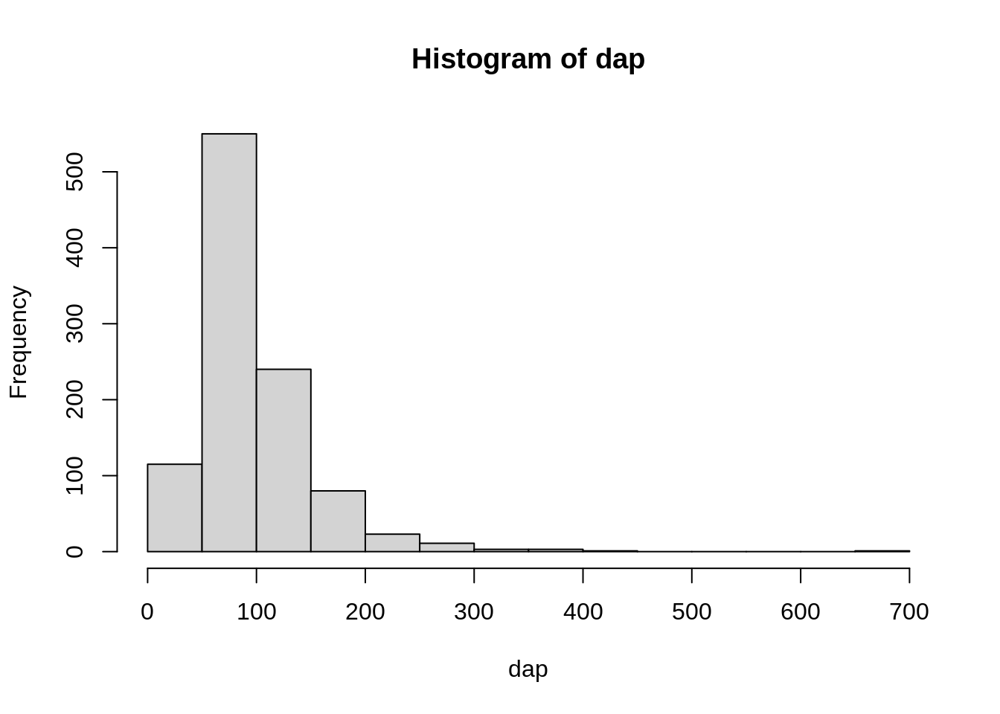
| local | parcela | arvore | fuste | cap | h | especie | dap |
|---|---|---|---|---|---|---|---|
| chauas | 1 | 1 | 1 | 210 | 80 | Myrcia sulfiflora | 66.84508 |
| chauas | 1 | 3 | 1 | 170 | 80 | Myrcia sulfiflora | 54.11268 |
## NULL# altura das arvore em cada localidade
chauas.h <- caixeta[caixeta$local == "chauas", "h"]
jureia.h <- caixeta[caixeta$local == "jureia", "h"]
retiro.h <- caixeta[caixeta$local == "retiro", "h"]
# para a localidade chauas
hist(chauas.h, breaks = 20)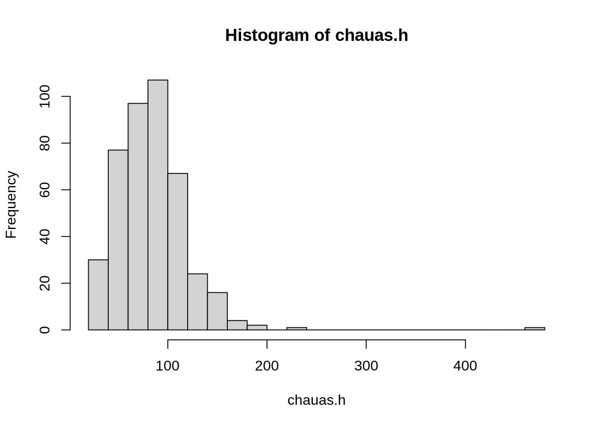
## [1] 480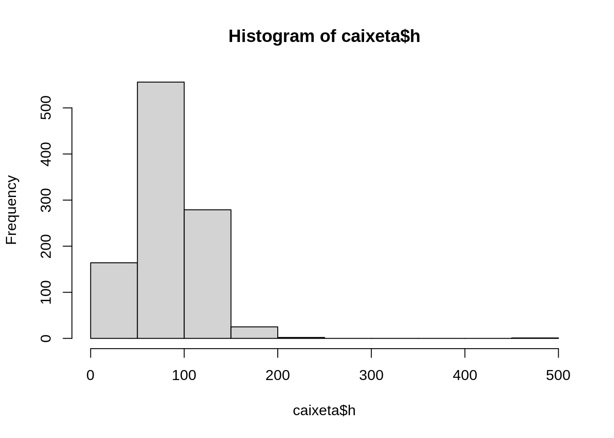
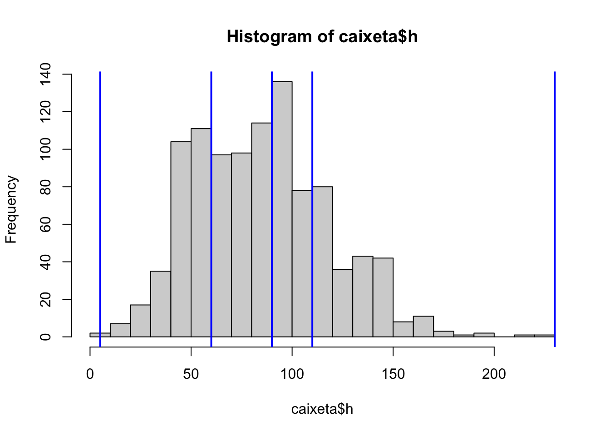
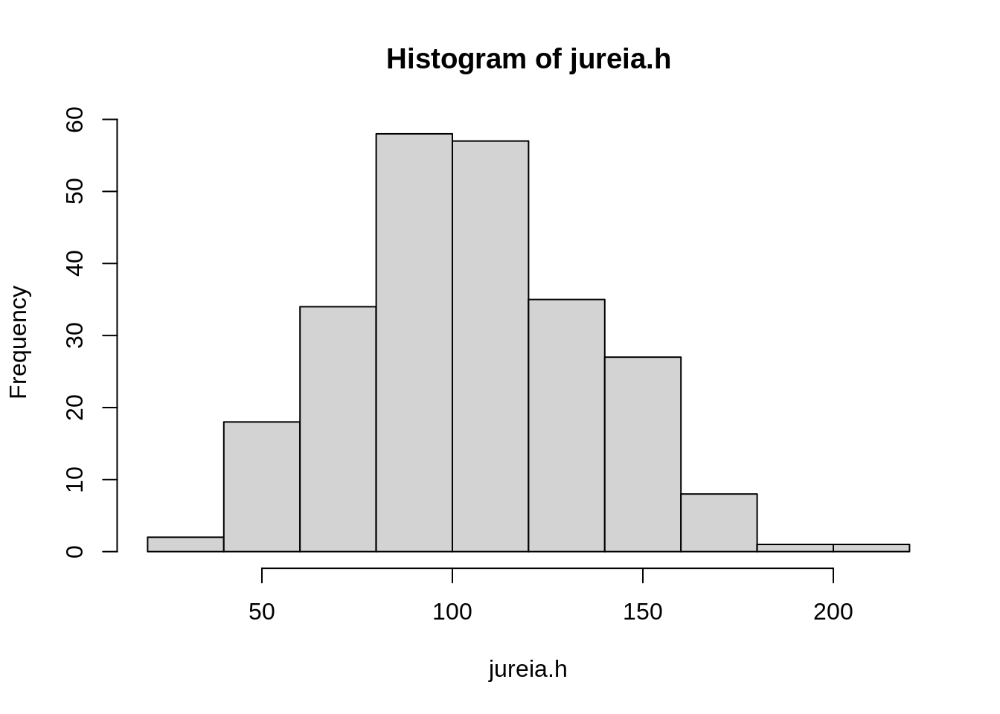
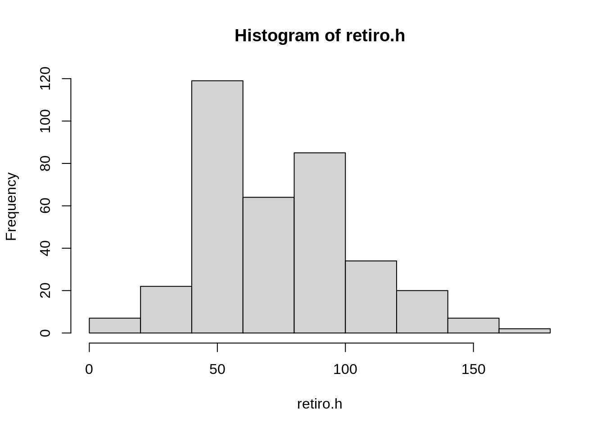
## [1] 20 230## [1] 30 220## [1] 5 170xl <- c(0, 250) # limitando o grafico aos extremos de todo o conjunto de dados
yl <- c(0, 150)
hist(chauas.h, breaks = 30, xlim = xl, ylim = yl)
hist(jureia.h, add = TRUE, breaks = 30, col = "blue")
hist(retiro.h, add = TRUE, breaks = 30, col = "green")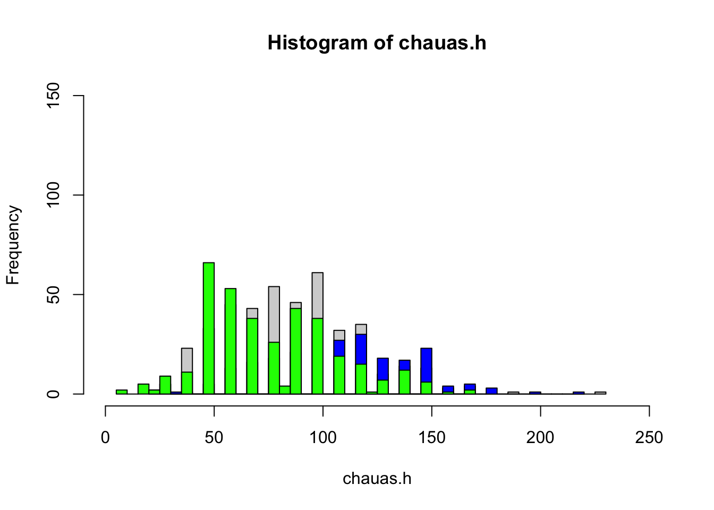
# mas seria melhor ver cada distribuicao individualmente por localidade
# dividimos o dispositivo em 3 linhas e uma coluna
par(mfrow = c(3, 1))
hist(chauas.h, breaks = 20, xlim = xl, ylim = yl, col = "green")
hist(jureia.h, breaks = 20, xlim = xl, ylim = yl, col = "blue")
hist(retiro.h, breaks = 20, xlim = xl, ylim = yl, col = "red")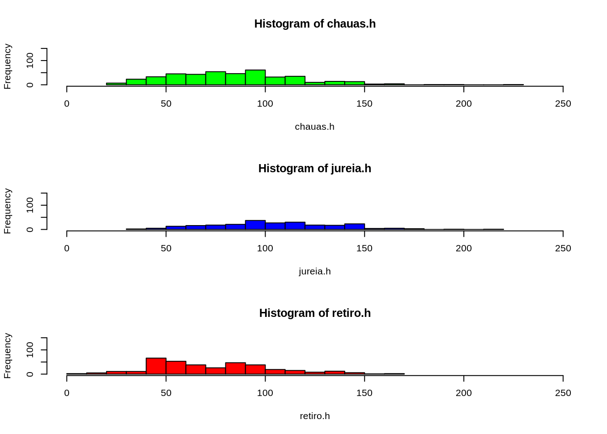
12.2 Tabelas de variáveis categóricas
A função table() permite contar valores em fatores e vetores e você pode relembrar como usar a função barplot() para gerar gráficos de barra simples:
| local | parcela | arvore | fuste | cap | h | especie | dap |
|---|---|---|---|---|---|---|---|
| chauas | 1 | 1 | 1 | 210 | 80 | Myrcia sulfiflora | 66.84508 |
| chauas | 1 | 3 | 1 | 170 | 80 | Myrcia sulfiflora | 54.11268 |
| chauas | 1 | 4 | 1 | 720 | 70 | Syagrus romanzoffianus | 229.18312 |
| chauas | 1 | 5 | 1 | 200 | 80 | Tabebuia cassinoides | 63.66198 |
| chauas | 1 | 6 | 1 | 750 | 170 | indet.1 | 238.73241 |
| chauas | 1 | 7 | 1 | 320 | 80 | Myrcia sulfiflora | 101.85916 |
# tem a coluna especie
# podemos resumir quantos individuos tem de cada espécie (considerando que cada linha é um individuo)
table(caixeta$especie)| Alchornea triplinervia | Andira fraxinifolia | bombacaceae | Cabralea canjerana | Callophyllum brasiliensis | Calophyllum brasiliensis | Cecropia sp | Coussapoa macrocarpa | Coussapoa micropoda | Cryptocaria moschata | Cyathea sp | Eugenia oblongata | eugenia3 | fabaceae1 | Ficus sp | Gomidesia sp | Ilex durosa | Ilex sp | indet.1 | indet.2 | indet.3 | Inga sp | Jacaranda puberula | jussara | Matayba sp | Mela 1 | Mela 2 | Myrcia sulfiflora | Myrtaceae 3 | myrtaceae1 | myrtaceae2 | myrtaceae4 | Pera glabrata | Persea sp | Pisonia sp | Psidium sp | Simplocos sp | Solanum sp1 | Solanum sp2 | Syagrus romanzoffianus | Tabebuia 1 | Tabebuia cassinoides | Tibouchina nutticeps |
|---|---|---|---|---|---|---|---|---|---|---|---|---|---|---|---|---|---|---|---|---|---|---|---|---|---|---|---|---|---|---|---|---|---|---|---|---|---|---|---|---|---|---|
| 15 | 4 | 1 | 4 | 7 | 4 | 1 | 3 | 9 | 2 | 2 | 2 | 1 | 1 | 2 | 1 | 8 | 2 | 1 | 1 | 1 | 4 | 2 | 37 | 1 | 63 | 2 | 96 | 3 | 4 | 1 | 1 | 1 | 3 | 2 | 20 | 2 | 1 | 1 | 1 | 10 | 698 | 2 |
| Tabebuia cassinoides | Myrcia sulfiflora | Mela 1 |
|---|---|---|
| 698 | 96 | 63 |
| chauas | jureia | retiro |
|---|---|---|
| 426 | 241 | 360 |
## Graficos de barra para representar uma tabela
op <- par(no.readonly = TRUE) # pega parametros gráficos atual
par(mar = c(10, 3, 0, 0)) # mudando as margens
vv <- sort(table(caixeta$especie), decreasing = T)
vv[1:5] # cinco especies mais abundantes| Tabebuia cassinoides | Myrcia sulfiflora | Mela 1 | jussara | Psidium sp |
|---|---|---|---|---|
| 698 | 96 | 63 | 37 | 20 |
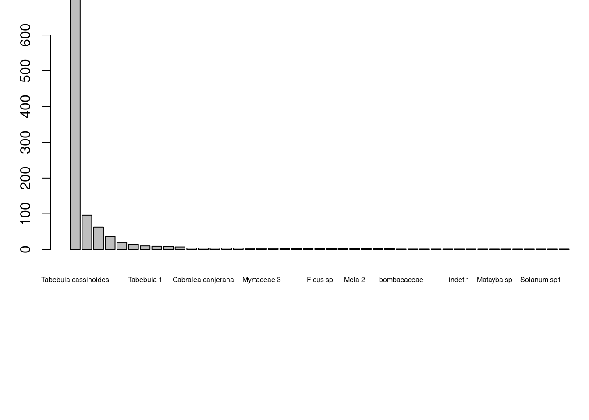
par(las = 2, mar = c(10, 5, 5, 1)) # mudando margens e orientacao dos eixos
barplot(sort(table(caixeta$especie), decreasing = T), cex.names = 0.8)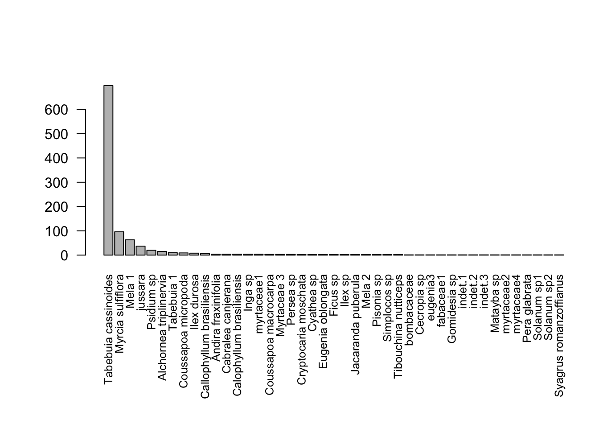
# muita coisa, pegando apenas as especies mais abundantes
barplot(sort(table(caixeta$especie), decreasing = T)[1:10], cex.names = 0.8)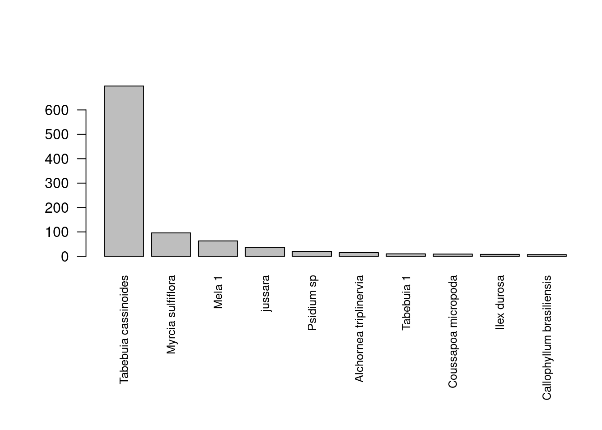
# note como Tabebuia cassonoides é muito mais abundante que qualquer outra espécie nessas comunidades
par(op) # volta aos parametros
# numero de individuos por localidade
barplot(table(caixeta$local), ylab = "Número de indivíduos")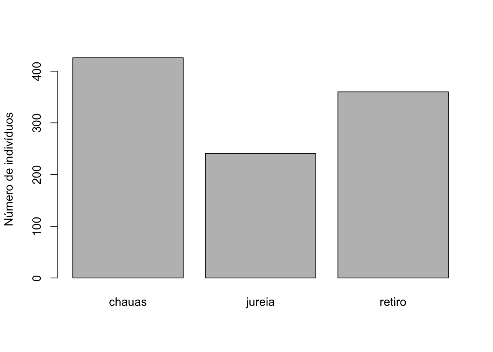
12.2.1 Resumo de gráficos univariados
Além das funções gráficas apresentadas acima, vamos ver aqui as funções dotchart() e stripchart(), úteis para visualizar dados brutos.
| local | parcela | arvore | fuste | cap | h | especie | dap |
|---|---|---|---|---|---|---|---|
| chauas | 1 | 1 | 1 | 210 | 80 | Myrcia sulfiflora | 66.84508 |
| chauas | 1 | 3 | 1 | 170 | 80 | Myrcia sulfiflora | 54.11268 |
| chauas | 1 | 4 | 1 | 720 | 70 | Syagrus romanzoffianus | 229.18312 |
| chauas | 1 | 5 | 1 | 200 | 80 | Tabebuia cassinoides | 63.66198 |
| chauas | 1 | 6 | 1 | 750 | 170 | indet.1 | 238.73241 |
| chauas | 1 | 7 | 1 | 320 | 80 | Myrcia sulfiflora | 101.85916 |
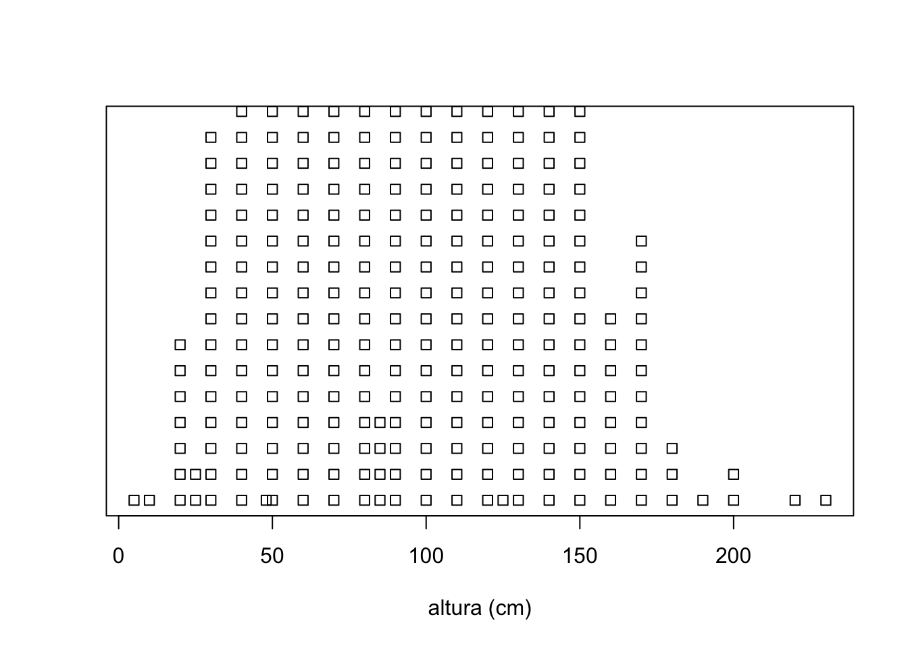
# note que o único valor extremos fica super evidente
# poderíamos usar a função dotchart para isso
dotchart(caixeta$h, ylab = "Observações", xlab = "Altura (m)")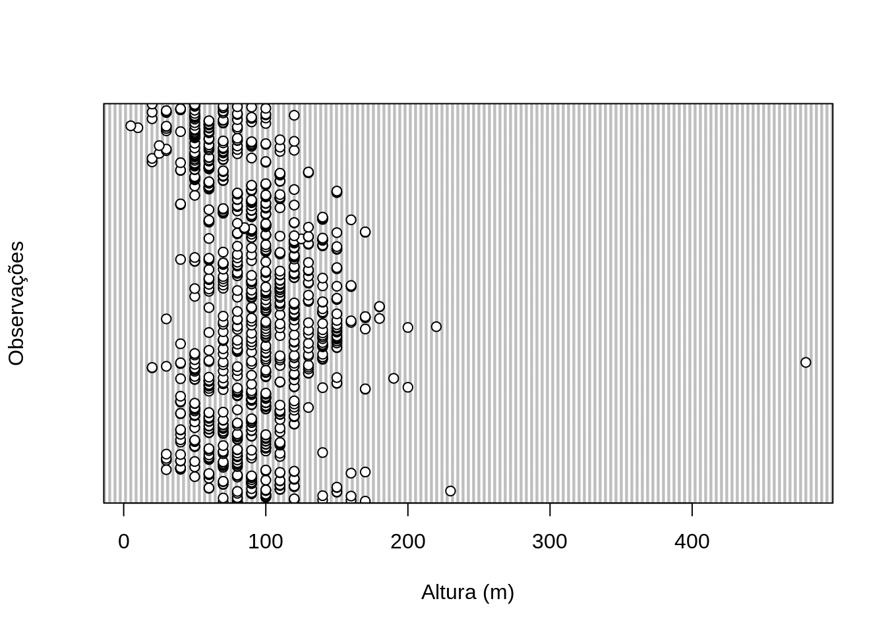
# inversão dos eixos..
# vamos corrigir o valor extremo
caixeta[which(caixeta$h > 300), "h"] <- 48
# faz um boxplot disso
boxplot(caixeta$h) # já vimos isso, mas note os pontos isolados dos boxes (caixas), esses são valores isolados, meio fora da distribuicao
summary(caixeta$h) # ve os quartis e média| Min. | 1st Qu. | Median | Mean | 3rd Qu. | Max. |
|---|---|---|---|---|---|
| 5 | 60 | 90 | 89.86173 | 110 | 230 |
# plota a mediana
abline(h = median(caixeta$h), col = "red", lwd = 3)
# plota todos os quartis
abline(h = quantile(caixeta$h), col = "blue", lwd = 2)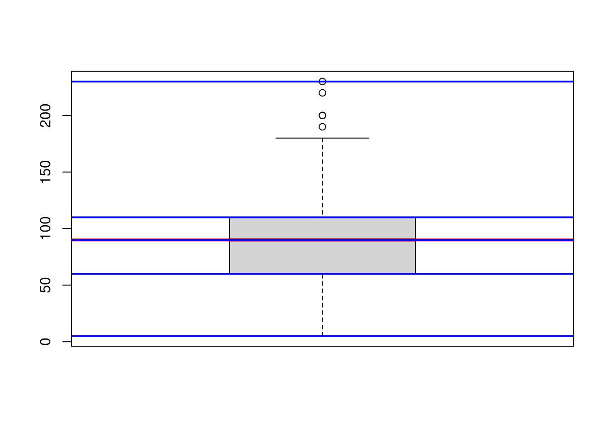
# ve em forma de histograma
hist(caixeta$h, breaks = 20)
# plota os quartis
abline(v = quantile(caixeta$h), col = "blue", lwd = 2)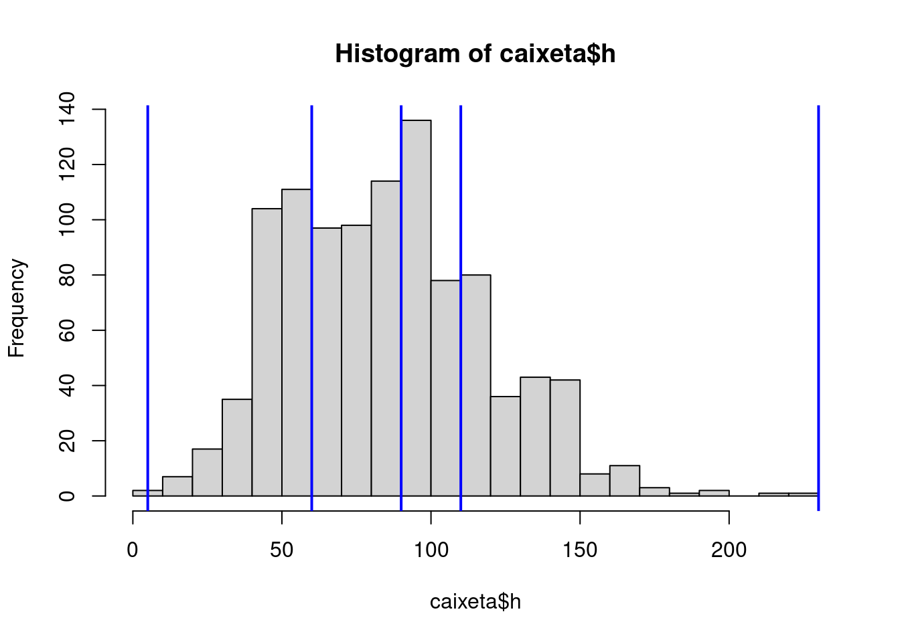
## [1] 1027 8stripchart(caixeta$h, method = "stack", jitter = 0, offset = 1, ylim = c(0, nrow(caixeta)), xlab = "altura (cm)")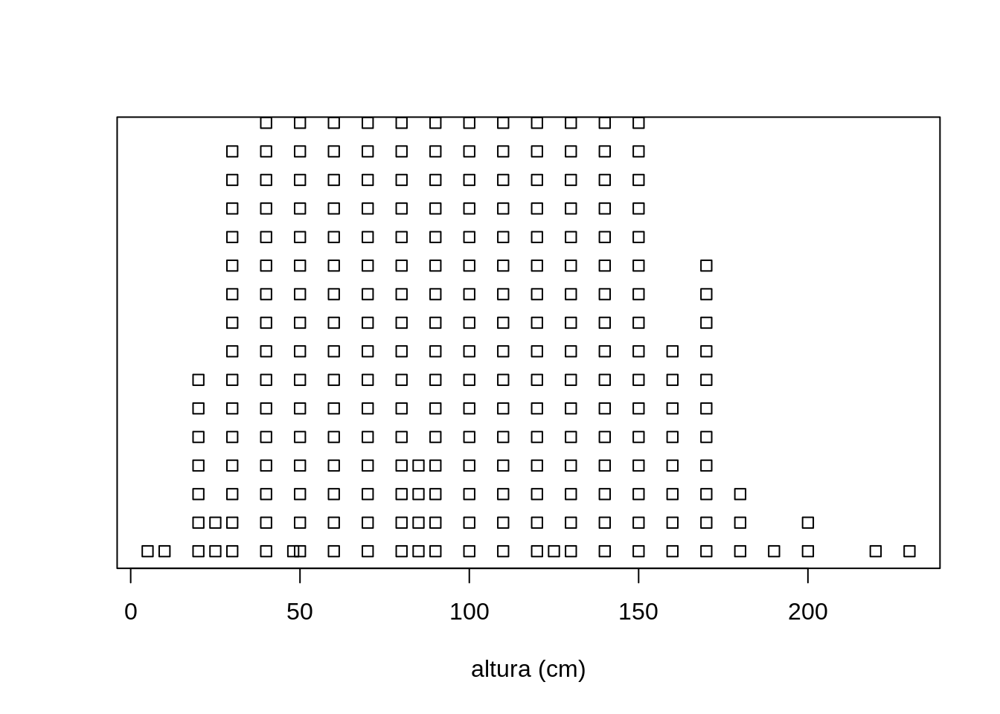
## Numa tela só boxplot, histograma, densidade e stripchart
olp <- par(no.readonly = TRUE)
par(mfrow = c(2, 2), mar = c(3, 3, 3, 0))
boxplot(caixeta$h)
hist(caixeta$h)
plot(stats::density(caixeta$h))
stripchart(caixeta$h, method = "stack")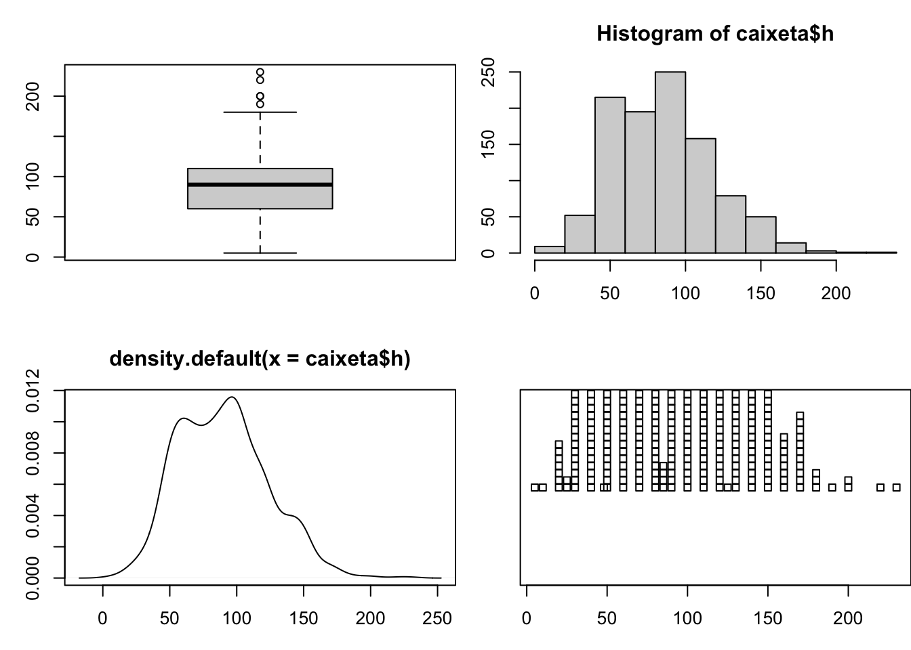
par(olp) # resgata parametros graficos originais
## Histograma com diferentes larguras de barras
par(mar = c(5, 4, 3, 1), mfrow = c(3, 2))
hist(caixeta$h, main = "Default")
hist(caixeta$h, breaks = 5, main = "Cinco break-points")
hist(caixeta$h, breaks = 10, main = "Dez break-points")
hist(caixeta$h, breaks = 15, main = "Quinze break-points")
hist(caixeta$h, breaks = 20, main = "Vinte break-points", col = "lightblue")
par(olp)
12.3 As variáveis têm distribuição normal?
A função density() que juntamente com hist(), que você já conhece, permite visualizar a densidade probabilística de uma variável numérica, ou seja descreve a distribuição de probabilidade, isto é, a chance de uma variável assumir um valor ao longo de um espaço (densidade) de valores.
A função dnorm() permite obter a densidade probabilistica de uma distribuição normal teórica, para a mesma média e mesmo desvio padrão dos teus dados.
Com isso você pode visualizar a distribuição dos seus dados e sobrepor a isso como seria a distribuição se os seus dados fossem normais.
# plota a densidade probabilistica = a curva da probabilidade da variável assumir certos valores de altura
plot(stats::density(caixeta$h))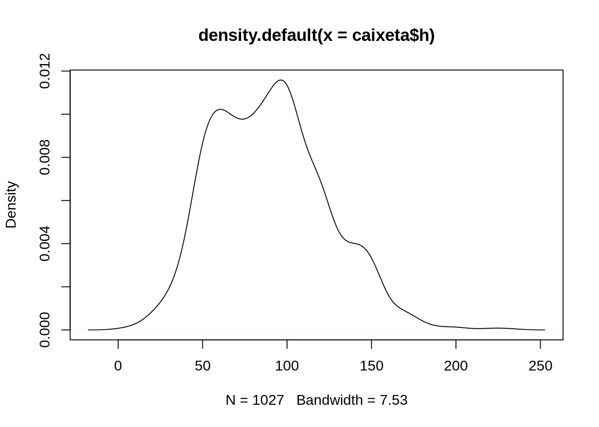
## Histograma com área = 1 e density probabilistica sobreposta (argumento prob=TRUE, muda o eixo y)
hist(caixeta$h, prob = T, breaks = 30, xlim = c(-1, max(caixeta$h) + 5))
# adiciona a linha da densidade
lines(stats::density(caixeta$h), col = "red", lwd = 2)
# adiciona a média
abline(v = mean(caixeta$h), col = "green", lwd = 2, lty = "solid")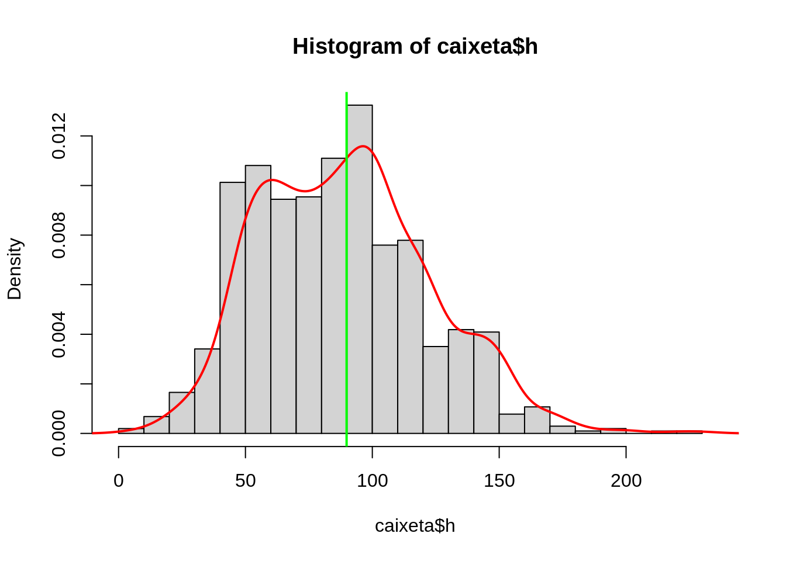
# note que na média a densidade probabilística é maior que nas caudas da distribuição
# vamos adicionar sobre nossa distribuicao REAL a densidade probabilistica para uma distribuição normal com media e desvio igual ao dado## Adicionando uma curva da normal aos graficos
?dnorm # veja o help dessa função e suas variantes. veremos isso melhor abaixo# pega a densidade probabilística de uma distribuição normal teórica, para quantis de seu interesse, segundo uma média e um desvio padrão
dnorm(seq(0, 1, by = 0.25), mean = mean(caixeta$h), sd = sd(caixeta$h)) # esses são os valores que a distribuição probabilistica assume, numa distribuição normal que tem o mesma média e a mesmo desvio padrão que os seus dados## [1] 0.0003251756 0.0003317476 0.0003384336 0.0003452351 0.0003521537?curve # veja que curve depende de uma função, ela traça a curva de uma f(x), num intervalo especificado de x (que foi plotado por hist)hist(caixeta$h, prob = T, breaks = 30, xlim = c(-1, max(caixeta$h) + 5))
# adiciona a linha da densidade
lines(stats::density(caixeta$h), col = "red", lwd = 2)
# adiciona a média
abline(v = mean(caixeta$h), col = "green", lwd = 2, lty = "solid")
# combinamos as coisas e adicionamos a distribuição
# teórica sobre os nosso dados
## Usamos a funcao curve,
curve(expr = dnorm(x, mean = mean(caixeta$h), sd = sd(caixeta$h)), add = T, col = "blue", lwd = 2)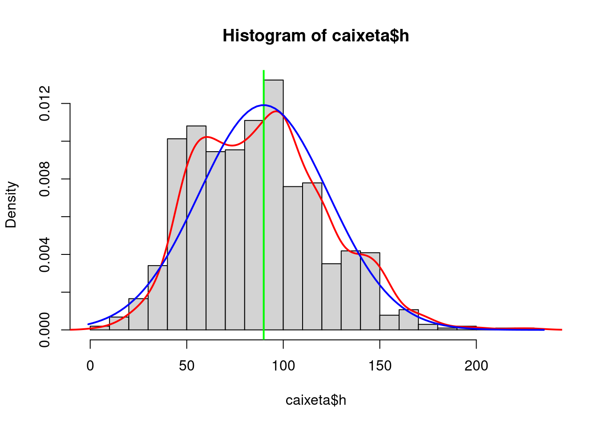
# note que os dados neste caso seguem bem uma curva normal.
# Portanto, mesmo sem fazer um teste, essa figura sugere que os dados de altura do caixetal é normalAs funções qqnorm() e qqline() permitem visualizar rapidamente se uma variável qualquer segue uma distribuição normal, ao compara os valores dos quantis empíricos (observados), com valores dos quantis teóricos (i.e. esperados por uma distribuição normal).
A função rnorm() gera um conjunto de dados aleatórios que tem distribuição normal.
# Teste de normalidade
######################################
## Exemplo para o qqplot
##########################################
# vamos simular valores
?rnorm # funcao que gera valores aleatórios que seguem uma distribuicao normal## Sorteio de 100 valores de uma normal com media=30 e desvio-padrao=3
zz <- rnorm(100, 30, 3)
mean(zz)## [1] 30.03516## [1] 2.666064## [1] 100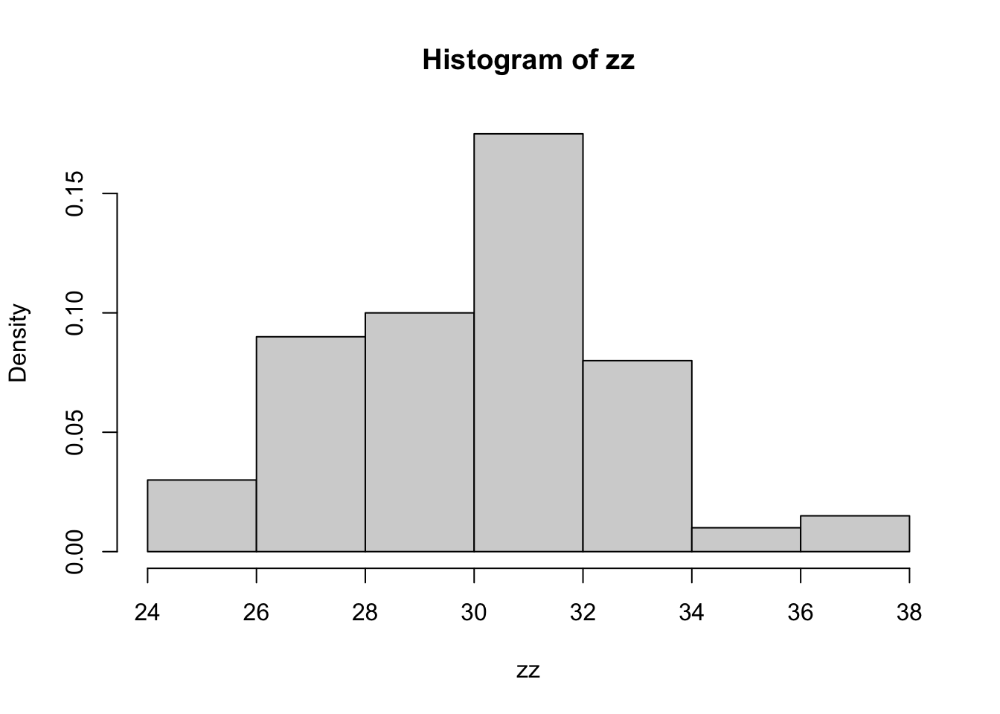
## Valores arredondados para 2 casa, e ordenados
x <- sort(round(rnorm(100, 30, 3), 2))
## Inspecionando os 5 primeiros e ultimos valores
x[1:5]## [1] 24.18 24.33 24.33 24.72 25.15## [1] 35.50 35.69 35.73 35.78 36.48 38.45## Calculo do percentil de cada valor
# relembre a funcao order (ela retorna os indices dos valores ordenados)
order(x) # veja que os indices estao sequenciais, porque geramos um vetor já pre-ordenado## [1] 1 2 3 4 5 6 7 8 9 10 11 12 13 14 15 16 17 18
## [19] 19 20 21 22 23 24 25 26 27 28 29 30 31 32 33 34 35 36
## [37] 37 38 39 40 41 42 43 44 45 46 47 48 49 50 51 52 53 54
## [55] 55 56 57 58 59 60 61 62 63 64 65 66 67 68 69 70 71 72
## [73] 73 74 75 76 77 78 79 80 81 82 83 84 85 86 87 88 89 90
## [91] 91 92 93 94 95 96 97 98 99 100# calculamos o percentil de cada valor, que é uma medida que indica o valor abaixo do qual uma certa porcentagem de observações existe. Por exemplo, o vigézimo percentil tem um valor, abaixo do qual 20% das observações são encontradas
px <- order(x) / 100
px## [1] 0.01 0.02 0.03 0.04 0.05 0.06 0.07 0.08 0.09 0.10 0.11 0.12 0.13 0.14 0.15
## [16] 0.16 0.17 0.18 0.19 0.20 0.21 0.22 0.23 0.24 0.25 0.26 0.27 0.28 0.29 0.30
## [31] 0.31 0.32 0.33 0.34 0.35 0.36 0.37 0.38 0.39 0.40 0.41 0.42 0.43 0.44 0.45
## [46] 0.46 0.47 0.48 0.49 0.50 0.51 0.52 0.53 0.54 0.55 0.56 0.57 0.58 0.59 0.60
## [61] 0.61 0.62 0.63 0.64 0.65 0.66 0.67 0.68 0.69 0.70 0.71 0.72 0.73 0.74 0.75
## [76] 0.76 0.77 0.78 0.79 0.80 0.81 0.82 0.83 0.84 0.85 0.86 0.87 0.88 0.89 0.90
## [91] 0.91 0.92 0.93 0.94 0.95 0.96 0.97 0.98 0.99 1.00# vejamos a correspondencia
# quantos valores são menores que o percentil 0.2 (ou 20%)?
sum(px < 0.2) # obviamente 19 se temos apenas 100 valores no nosso vetor## [1] 19## [1] 24.18 24.33 24.33 24.72 25.15 25.20 25.65 26.00 26.17 26.26 26.51 26.60
## [13] 26.62 26.79 26.93 26.96 27.07 27.28 27.31 27.31## [1] 27.31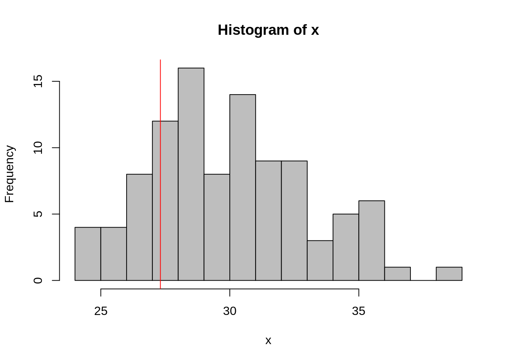
# as barras com valores menores ou iguais que o do percentil (linha vermelha), totalizam 20% das observações.
# com os percentis dos valores do dado original, podemos pegar a densidade probabilistica esperada se a distribuicao fosse normal
q.norm.x <- qnorm(px, mean = mean(x), sd = sd(x))
## Juntando valores originais, os percentis e os valores esperados em um dataframe, para facilitar a visualizacao
qq.plot.x <- data.frame(x = x, percentil = px, q.norm = q.norm.x)
qq.plot.x[1:5, ]| x | percentil | q.norm |
|---|---|---|
| 24.18 | 0.01 | 22.79771 |
| 24.33 | 0.02 | 23.63630 |
| 24.33 | 0.03 | 24.16836 |
| 24.72 | 0.04 | 24.56860 |
| 25.15 | 0.05 | 24.89417 |
| x | percentil | q.norm | |
|---|---|---|---|
| 95 | 35.50 | 0.95 | 35.01423 |
| 96 | 35.69 | 0.96 | 35.33980 |
| 97 | 35.73 | 0.97 | 35.74004 |
| 98 | 35.78 | 0.98 | 36.27210 |
| 99 | 36.48 | 0.99 | 37.11069 |
| 100 | 38.45 | 1.00 | Inf |
| x | percentil | q.norm |
|---|---|---|
| 24.18 | 0.01 | 22.79771 |
| 24.33 | 0.02 | 23.63630 |
| 24.33 | 0.03 | 24.16836 |
| 24.72 | 0.04 | 24.56860 |
| 25.15 | 0.05 | 24.89417 |
| 25.20 | 0.06 | 25.17129 |
## com isso eu posso comparar meus valores observados com os valores esperados se a distribuição fosse normal
plot(x ~ q.norm, data = qq.plot.x, xlab = "Quantis Esperados", ylab = "Valores Observados")
abline(0, 1, col = "red") # relacao esperada, caso os dados venham de uma populacao normal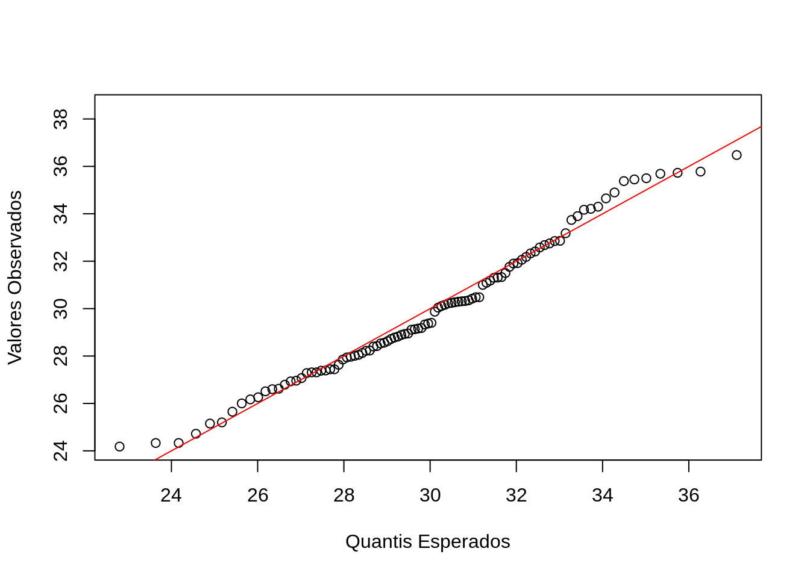
# note que a correlação é fortíssima, porque os usados no exemplo eram de fato normais, portanto, nenhuma surpresa nisso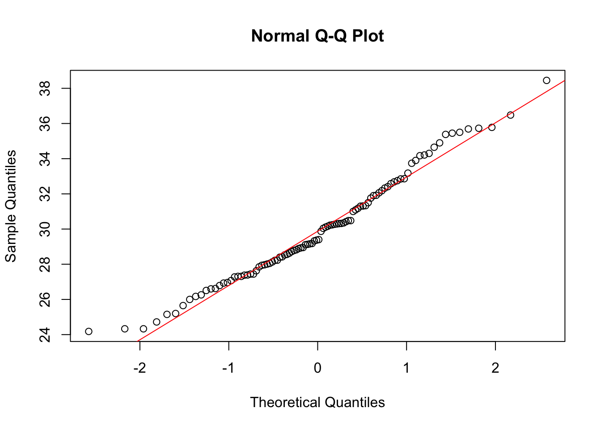
# suponha um dado não normal
# cria um exemplo lognormal (nao é uma distribuicao normal)
xlogn <- rlnorm(nrow(avesc), meanlog = 30, sdlog = 1)
hist(xlogn, prob = T, breaks = 20)
lines(stats::density(xlogn), col = "red", lwd = 2)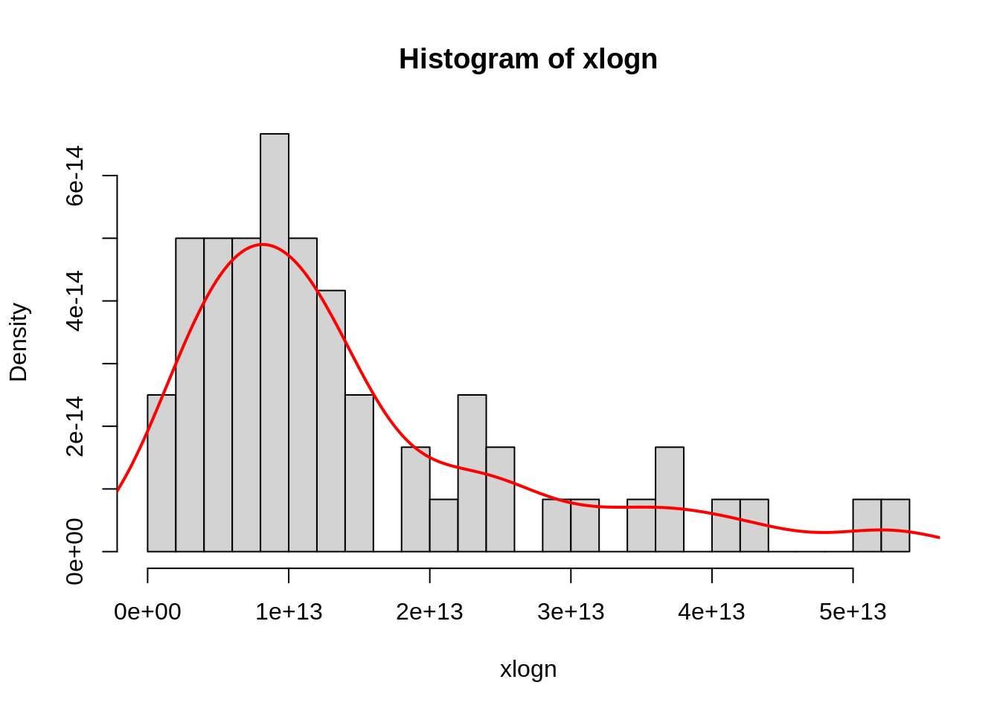
# nao é uma cuva normal, certo?
# mostra o QQ Plot nessa situação (veja como os pontos saem da linha)
qqnorm(xlogn)
qqline(xlogn, col = "red")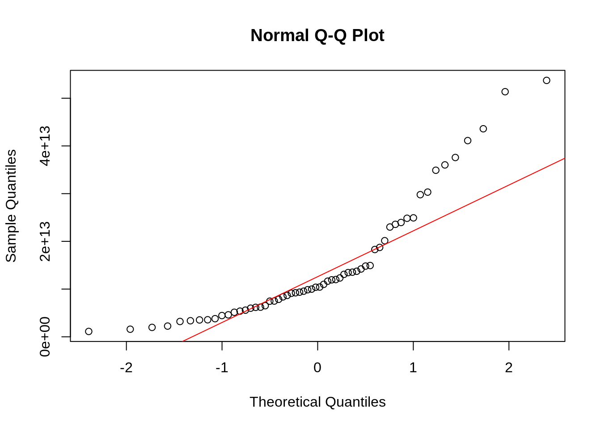
# entao vamos ver em dados reais
# altura, já vimos antes, tem distribuição bem normal
qqnorm(caixeta$h)
qqline(caixeta$h, col = "red")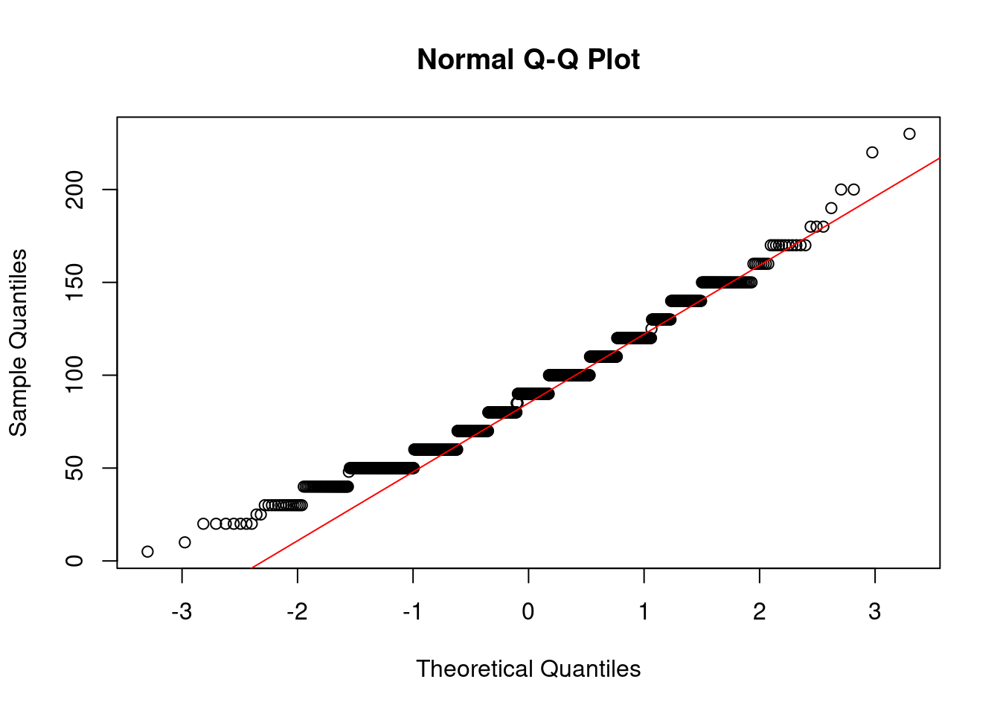
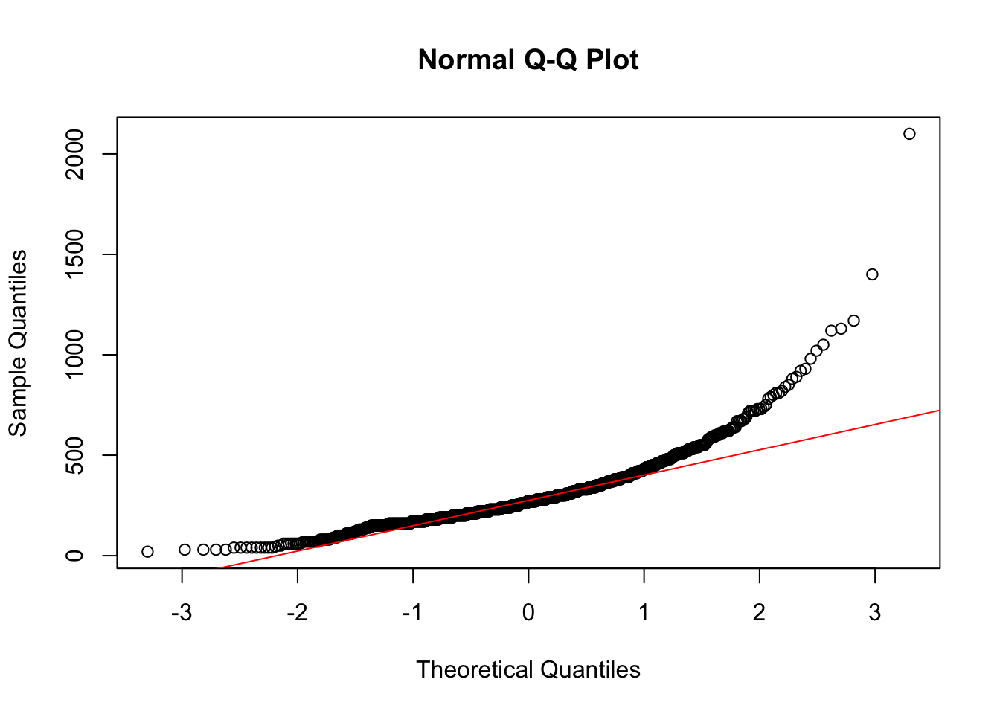